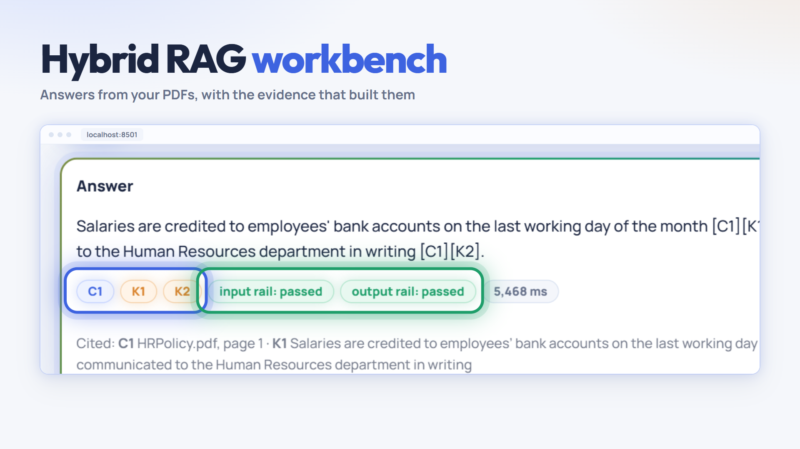
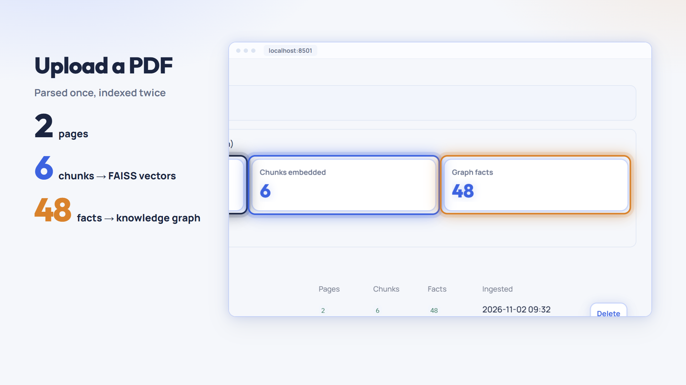
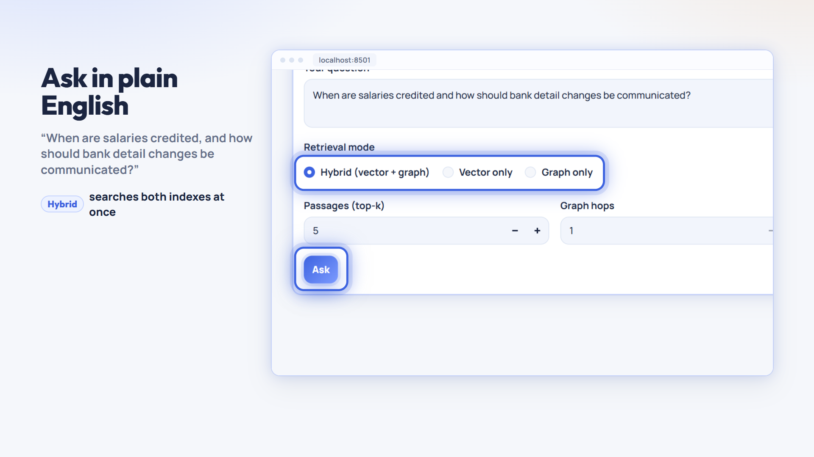
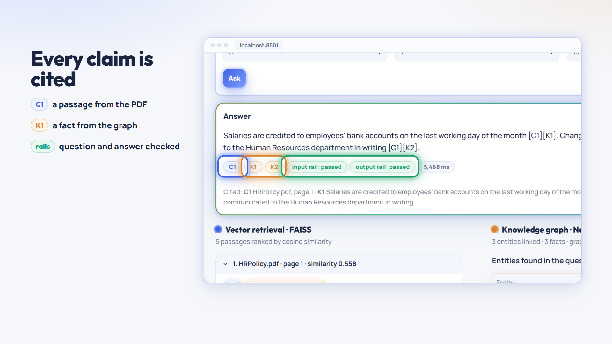
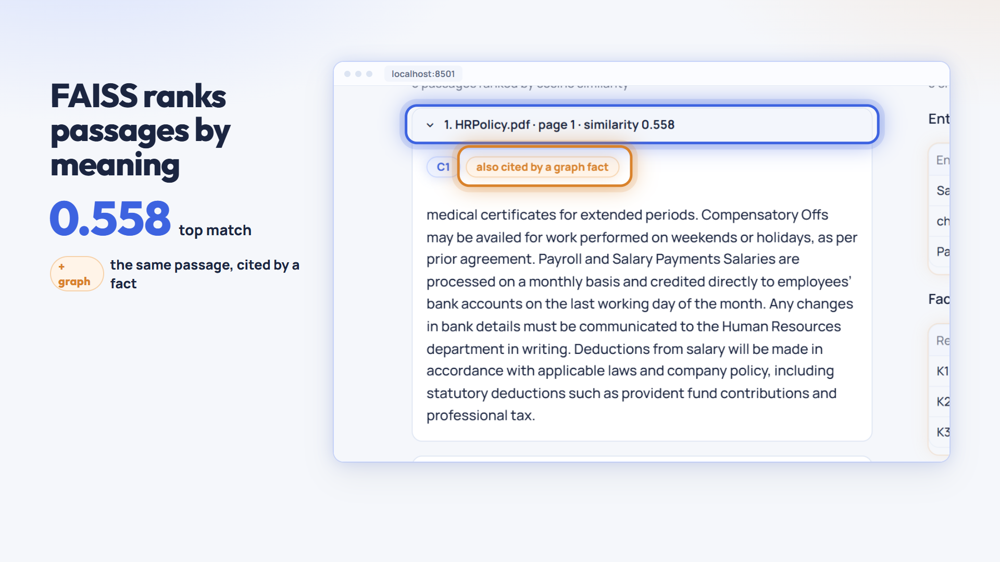
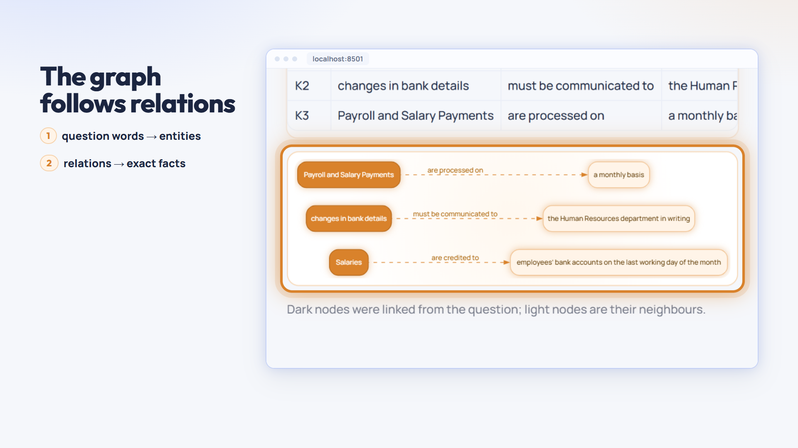
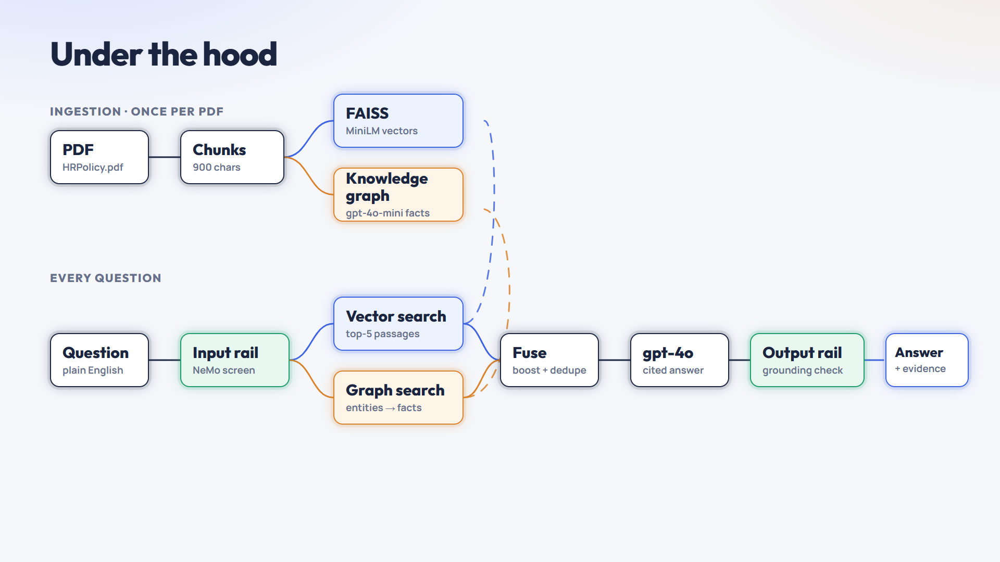
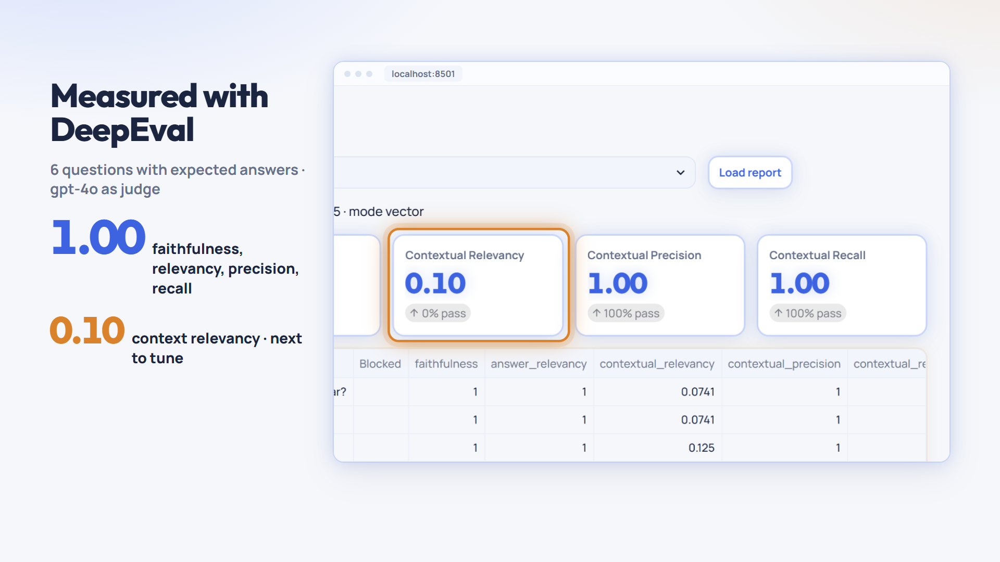
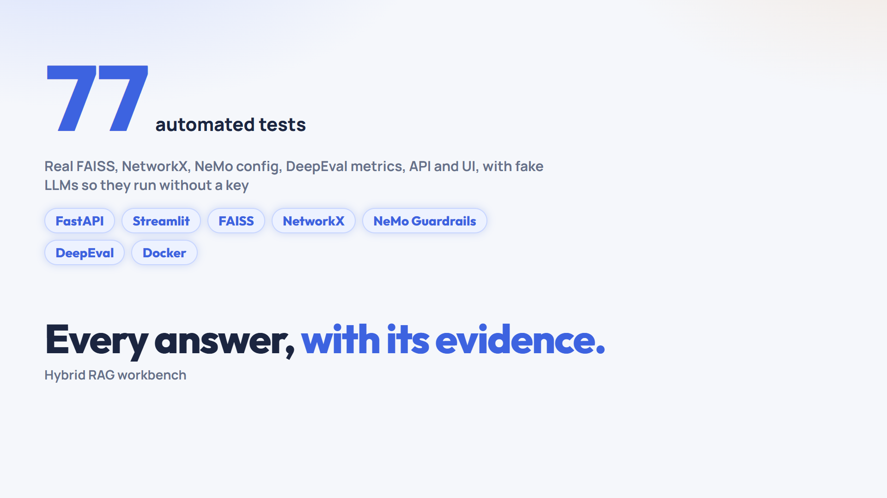

90 seconds, 1920x1080. Each still is a real frame from the film at its key moment; motion, voiceover, captions and music are added after approval. Blue italic lines are the voiceover.

The real answer card fills the window; its citations and guardrail badges light up as the title lands.
“Ask a question about any PDF, and get an answer that shows exactly where it came from.”

HRPolicy.pdf goes in. The camera pans across the result as 2 pages, 6 chunks and 48 graph facts count up.
“Upload a PDF. It's split into six chunks, then indexed twice: as vectors in FAISS, and as forty-eight facts in a knowledge graph.”

The question sits in the form; Hybrid mode and the Ask button are ringed in turn.
“Ask in plain English. Hybrid mode searches both indexes at the same time.”

Push into the answer card. C1, K1/K2 and both rail badges ring as the voice names them.
“Every claim is cited. C marks a passage, K marks a graph fact. Guardrails checked the question, and the answer.”

Push to the top FAISS passage: 0.558 counts up; the 'also cited by a graph fact' badge rings in apricot.
“FAISS ranks passages by meaning. The top match scores point five six, and a graph fact cites it too.”

The camera steps from entities to facts to the graph drawing, each ringed in apricot.
“The graph links words in the question to entities, then follows their relations to exact facts.”

One diagram grows part by part as the voice names it: ingestion, input rail, both searches, fuse, gpt-4o, output rail.
“Under the hood: a NeMo guardrail screens the question. Both searches run in parallel. The evidence is fused, gpt-4o answers, and a second rail checks it's grounded.”

The real DeepEval report: 1.00 counts up for four metrics; context relevancy 0.10 is flagged as the next fix.
“DeepEval measures quality, with gpt-4o as the judge. Faithfulness, relevancy, precision and recall all score one. Context relevancy is the next thing to tune.”

77 counts up, the stack lands, then the closing line holds.
“Seventy-seven automated tests cover the pipeline, served with FastAPI, Streamlit and Docker. Every answer, with its evidence.”